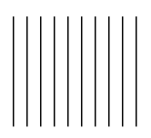
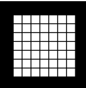
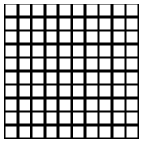

Using a while loop, draw vertical lines across the screen. Define a variable to represent the number of lines and another variable called 'spacing' to determine the distance between each line. Iterate through each line in the loop and draw them on the canvas.
Expected Output:
Create the same program as the one in 3.2.6 using a for loop
Expected Output:
Create the same program as the one in 3.2.6 using a do-while loop
Expected Output:
Create a dynamic visual of moving shapes along the x-axis. The shapes will be aligned along the y-axis all starting from the left side of the canvas and their movement will be influenced by the mouseX position. As the circles get closer to the bottom of the canvas, the movement will be faster. You can use any shape you want, start with a circle and then play around with different types of shapes.
Expected Output:
Grids are an incredibly useful tool in the creative coding arsenal, helping you organize elements in the canvas. Pixels themselves are arranged in a grid indexed by a row and a column. For this exercise, draw a grid from the top left corner to the bottom right one using what you learned so far about the draw loop and conditionals. It should be possible to define the square size and the padding around the grid.
Expected Output:
Breaking a pattern helps engaging the viewer. Try modifying the grid you defined in the previous exercise by randomly swapping shapes (e.g. draw a triangle instead of a circle) or colors.
Expected Output:
Create a grid using a nested for loop, to create the grid have the first for loop focus on the rows and the second for loop focus on the columns (or vice-versa) and then create a rectangle at each row-column index
Expected Output:
